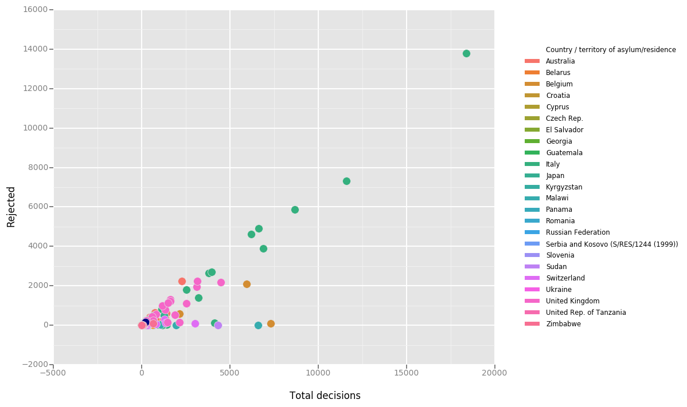
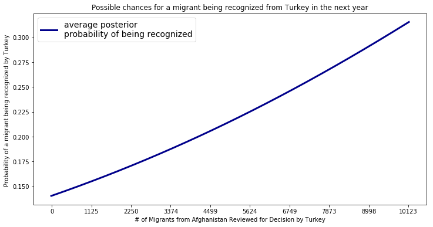

Purpose
A majority of the world’s refugees are disproportionately distributed to a small amount of geographical locations1. This is largely due factors such as geopolitical barriers and lack of facilitation from foreign governments. Heavy overpopulation of refugees into specific regions of the world cause economic and social problems in the countries that end up bearing the highest rates of emigration4. The list to the left depicts the 10 single countries who intake over half of the world’s refugees. We believe that we can use Artificial Intelligence with algorithms such as Markov Chains to predict the migration movements of displaced peoples based off of the variables, and use this predicative information to facilitate and prepare for large influxes of people2. This can significantly help surrounding countries that are overpopulated with refugees and help establish safer streamlined routes3.
We can apply this model to other displacement crises as well including natural disasters such as hurricanes and fires.

Method

Using a dataset provided by the UN Human Relief Agency we used a MCMC (Markov Chain Monte Carlo)Algorithm to predict what the likely probability that Country A will accept a refugee from Country B given they have a certain number of applicants. The way the MCMC algorithm does this is by sampling parameters for a logarithmic distribution multiple times until a distribution best fits the historical data provided. Using this distribution we can query the prediction results for Country A and Country B.
Documentation
1Al Jazeera. (2016, October 04). Ten countries host half of world's refugees: Report. Retrieved from https://www.aljazeera.com/news/2016/10/ten-countries-host-world-refugees-report-161004042014076.html
2United Nations. (2017, July 31). UNHCR Refugee Data. Retrieved from https://www.kaggle.com/unitednations/refugee-data#_=_
3Morabia, A., & Benjamin, G. C. (2015, December). Retrieved from https://www.ncbi.nlm.nih.gov/pmc/articles/PMC4638237/
4United Nations. (n.d.). The role of host countries: The cost and impact of hosting refugees. Retrieved from http://www.unhcr.org/en-us/excom/standcom/4de4f7959/role-host-countries-cost-impact-hosting-refugees.html